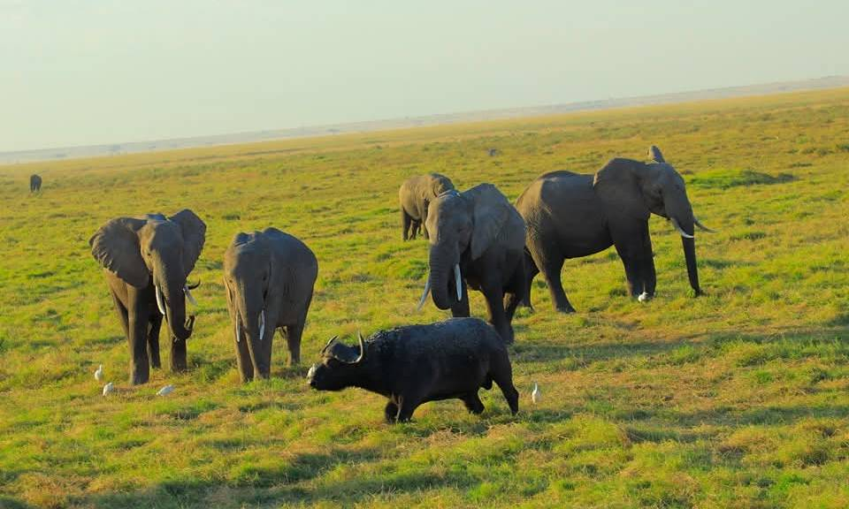
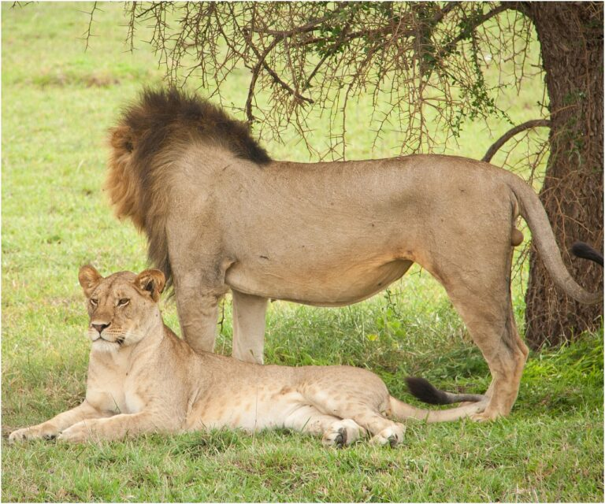
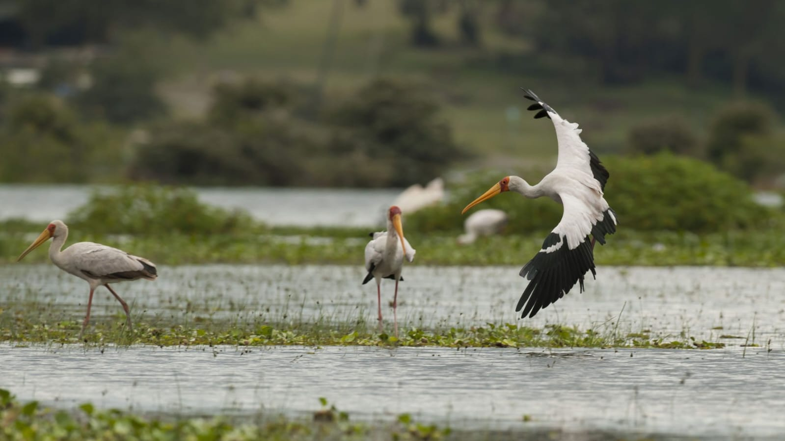
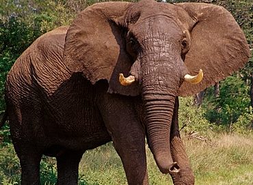
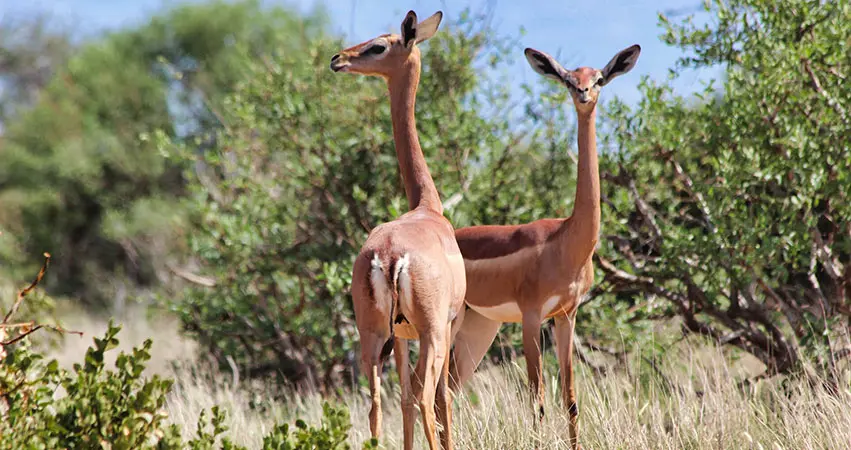

Maasai Mara
Vast open plains, abundant wildlife and memorable game-viewing opportunities.
Experience the remarkable diversity of Kenya, from the open plains of the Maasai Mara to the lakes of the Rift Valley and the spectacular landscapes of Amboseli and Tsavo.

This suggested safari brings together some of Kenya's best-known wildlife destinations. Enjoy the famous savannah landscapes of the Maasai Mara, explore the Great Rift Valley and experience the dramatic scenery of southern Kenya.
From wildlife viewing to beautiful landscapes, every destination offers a different perspective of the country.
Each stop introduces you to a different landscape, wildlife habitat and safari experience.

Vast open plains, abundant wildlife and memorable game-viewing opportunities.

A scenic Rift Valley destination known for its lake, birdlife and wildlife.

Famous for elephant herds and beautiful views of Mount Kilimanjaro.

Explore the expansive wilderness and distinctive landscapes of Tsavo West and East.
A sample route that can be adjusted to your travel dates, interests and accommodation preferences.
Depart Nairobi and travel towards the Maasai Mara through the Great Rift Valley region. Arrive at your selected accommodation and prepare for your safari experience.
Spend the day exploring the reserve and its surrounding ecosystem. Enjoy opportunities to spot wildlife across the open grasslands.
Continue discovering the Mara's wildlife and landscapes. Your activities and game-viewing schedule can be arranged according to the final safari programme.
Leave the Mara and travel towards Lake Nakuru National Park. Enjoy the changing scenery of the Great Rift Valley before settling in for the evening.
After your Lake Nakuru experience, travel towards Amboseli National Park. This is a longer transfer day, with the route and timing confirmed during trip planning.
Explore the park's open plains and wetlands, with opportunities to see elephants and other wildlife against the backdrop of Mount Kilimanjaro when conditions allow.
Travel to Tsavo West and discover its varied terrain, hills and wilderness scenery. Visit sites such as Mzima Springs only where included in the confirmed programme.
Continue to Tsavo East, enjoying the transition between the landscapes of the two parks. Arrive at your selected accommodation.
Spend time exploring Tsavo East's expansive landscapes and wildlife habitats. Enjoy a final full safari experience in the Tsavo ecosystem.
Depart Tsavo East and travel back to Nairobi, marking the end of your suggested 10-day Kenya safari.
One journey, several distinctive landscapes and opportunities to experience Kenya.
Explore different wildlife habitats across the Maasai Mara, Rift Valley and Tsavo ecosystems.
Experience open savannahs, Rift Valley scenery, mountain views and expansive wilderness.
Capture memorable scenery and wildlife moments throughout your journey.
Contact Liamber Prime Travels Limited to customise this 10-day safari around your preferred dates, accommodation style and travel interests.